濟州島行程
🍊
Day 03 濟州島南部
🧺 西歸浦每日偶來市場
🗺️Map
🍢
美食推薦必吃：
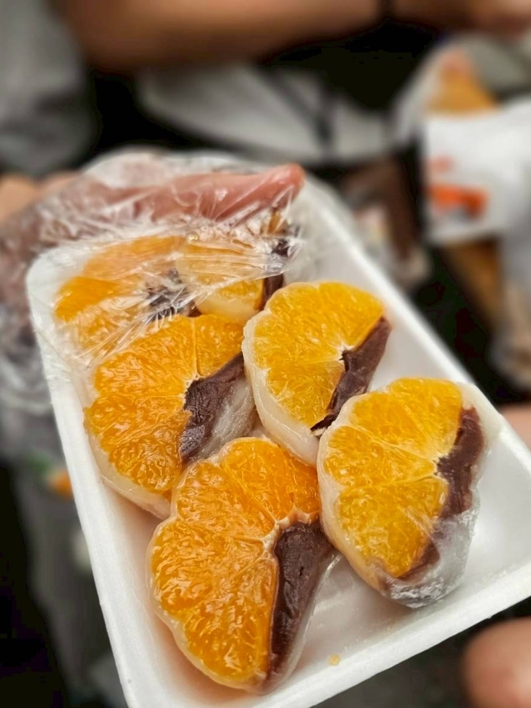
橘子麻糬
裡面包著麻糬和紅豆餡，橘子甜多汁，搭配紅豆餡意外地很不錯好吃
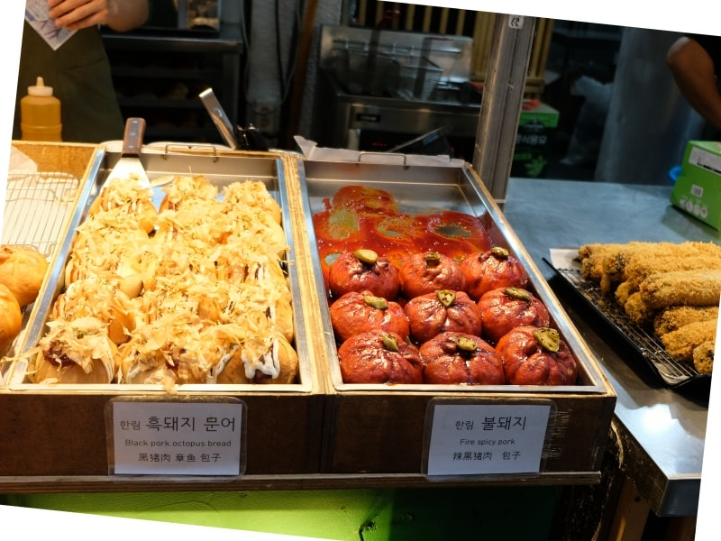
濟成製菓
烤包子專賣店，外表很像麵包，把濟州島在地食材做成各種餡料塞進餅皮，有用辣椒醬調味的黑豬肉、奶油白醬甜蝦、韭菜雞蛋、黑豬肉章魚等多種口味
現場吃的話請店員幫忙加熱，烤包子的外皮口感才會更酥軟，趁熱吃口感最佳
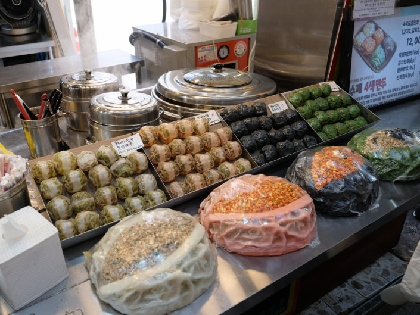
匠人之家
以招牌四色手工餃子為主，有黑豬肉餃子、泡菜餃子、章魚餃子和鮑魚餃子
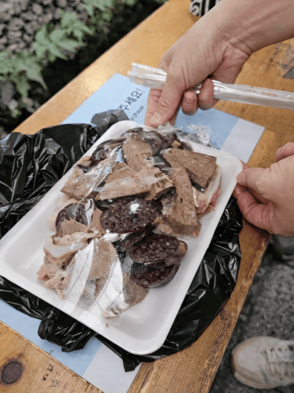
血腸豬腳
位於西歸浦每日偶來市場2號入口走進去快到交叉入口的右邊
店家會附一小包的鹽巴，倒在盤子旁邊血腸沾著吃就可以了，吃起來口感不錯好吃
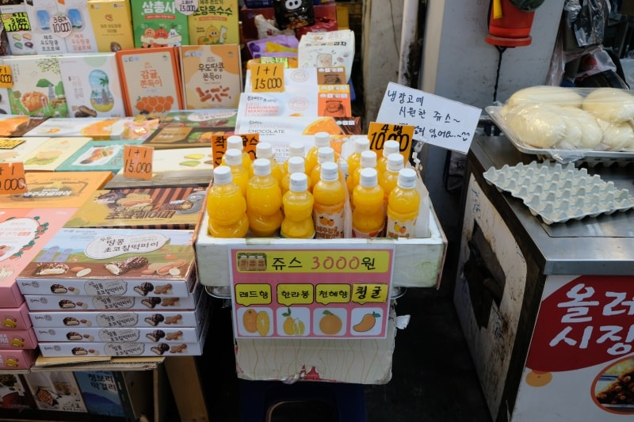
橘子果汁
有分成柑橘果汁、天惠香果汁和漢拏橘果汁三種不同品種的橘子
💡
逛街提醒：市場中間有附設座位水道區，買完小吃可以坐著慢慢享用；大部分店家皆可刷卡，但部分小攤位準備少許現金會更方便！
位於濟州島西南側中文觀光園區內，以黑、白、赤、灰四種顏色交織的獨特沙灘與高聳崖壁聞名。這裡的海浪較大，是韓國享譽盛名的衝浪聖地，也是許多高級渡假飯店私房海景步道連通的景點。
🌊
必訪亮點與特色體驗：
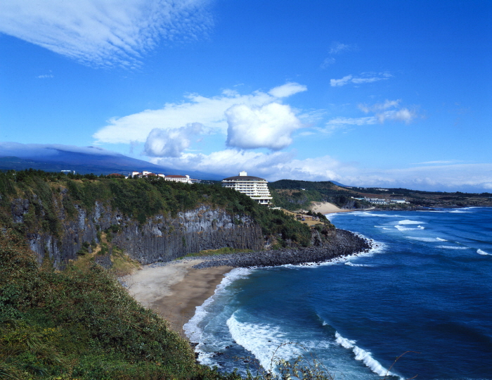
四色沙灘與火山懸崖景致
獨特黑火山岩海岸地形
沙灘由黑、白、紅、灰色不同顆粒組成，背景搭配屏風般的火山岩懸崖，呈現極具震撼力的海陸交界景觀。
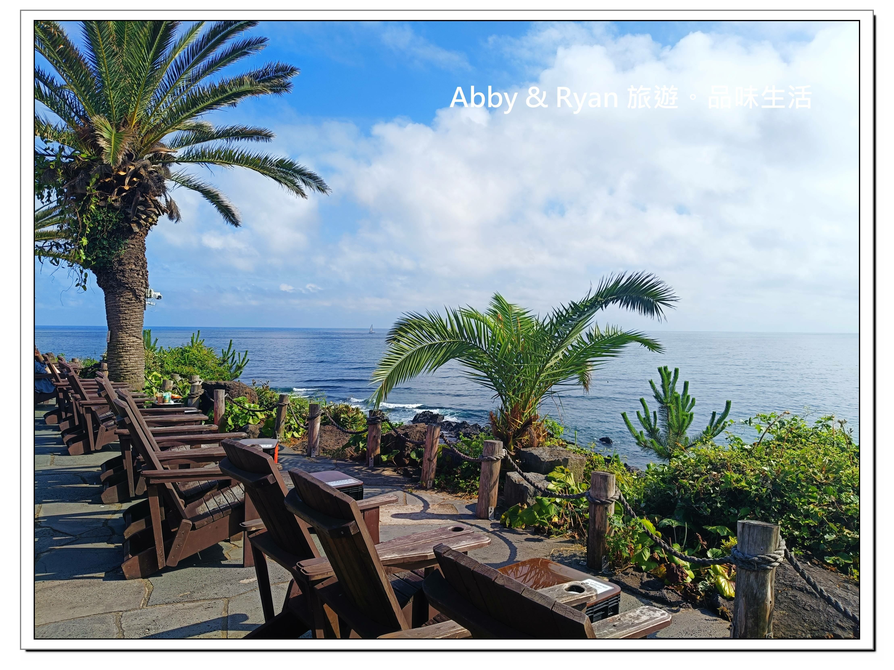
崖頂熱門景觀酒吧 The Cliff
位於海灘上方的複合式餐酒館，擁有絕佳的戶外露天沙發區，傍晚能欣賞無敵夕陽落海景致與音樂演出。
⏰
不同時段的獨特氛圍 (照片參考)：
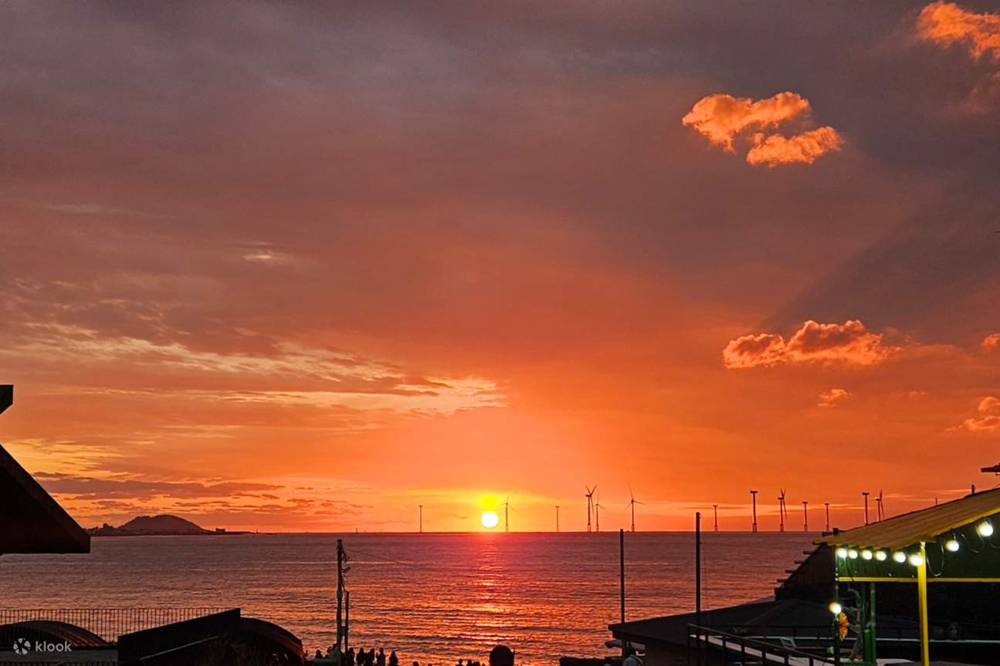
【17:00 - 19:30】夕陽派對
漫步在夕陽餘暉染紅的沙灘上，欣賞絕美日落景致。隨後移步至崖頂的 The Cliff 酒吧，在音樂與燈光下享受海邊微醺的夕陽派對。
💡
遊覽提醒：建議預留 1.5 ~ 2 小時漫步拍照、享用下午茶或體驗衝浪；停車場至沙灘需走一段斜坡步道。海岸邊浪較大，下水游泳請特別注意安全警示
位於濟州西南側區域，結合展覽、品茶、購物與甜點體驗，是一個採買濟州島伴手禮的好地方；而緊鄰的 innisfree JEJU HOUSE 濟州小屋以濟州島的天然原料與環保理念為主軸，打造出能吃、能拍照、能體驗的品牌空間，保養品的部分想必大家不陌生，但濟州小屋除了保養品的販售外，還有DIY體驗、甜點與濟州島限定商品
🍃
必訪亮點與限定美食：
濃郁綠茶霜淇淋 & 蛋糕
館內 Cafe 招牌！採用有機茶葉製作，綠茶香氣濃郁甘醇、甜而不膩，搭配綠茶瑞士卷非常熱門。
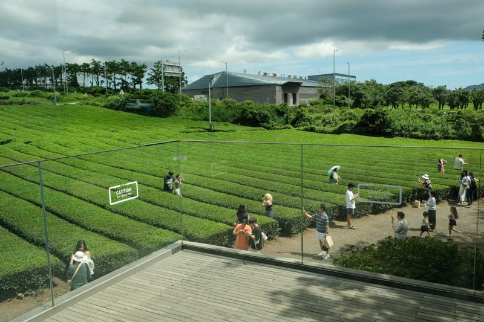
廣袤西廣茶園
博物館周圍圍繞著超大片綠茶園，入口處巨大的綠茶杯裝置藝術是造訪濟州島必拍的打卡地標。
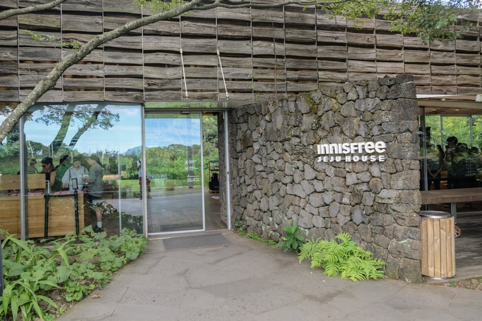
Innisfree 濟州小屋
位於 Osulloc 園區後方步行 2 分鐘
獨棟玻璃屋建築，提供天然火山泥手作香皂體驗，並販售濟州限定保養品與早午餐甜點。
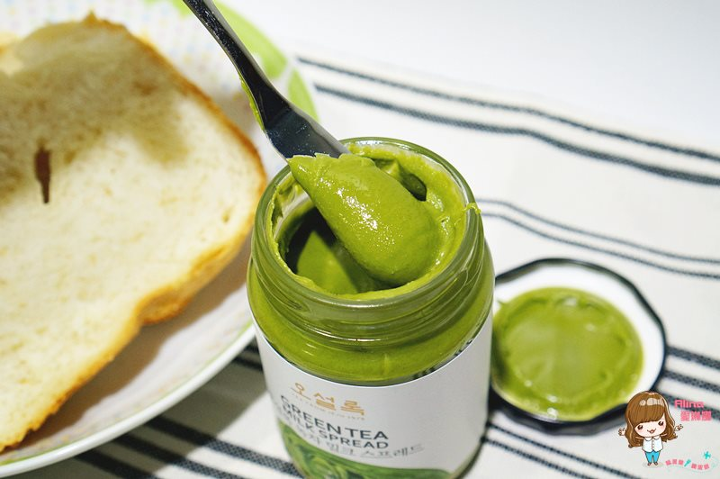
綠茶牛奶抹醬 & 特調茶包
伴手禮區必買靈魂抹醬，質地滑順抹麵包超香濃；另有多款以濟州花果調配的特色綜合茶包。
💡
遊覽提醒：園區涵蓋綠茶博物館與 Innisfree 小屋，建議預留 1.5 ~ 2 小時漫步拍照與享用下午茶；館內與伴手禮區均全面支援信用卡刷卡消費。
☕
餐廳選擇：
兩個景點可以一起看(鳥島可以看日落)
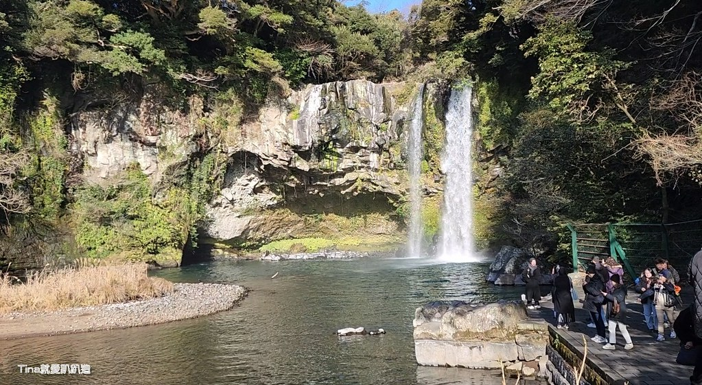
位於濟州島西歸浦市區，意為「天與地相會的池塘」。高約 22 公尺、寬 12 公尺的瀑布從奇岩峭壁傾瀉而下，落入深達 20 公尺的清澈潭水中。沿途步道平緩好走，被茂密的原生暖溫帶森林圍繞，也是濟州島少數開放夜間參觀的著名自然景點。
🍃
必訪亮點與特色體驗：
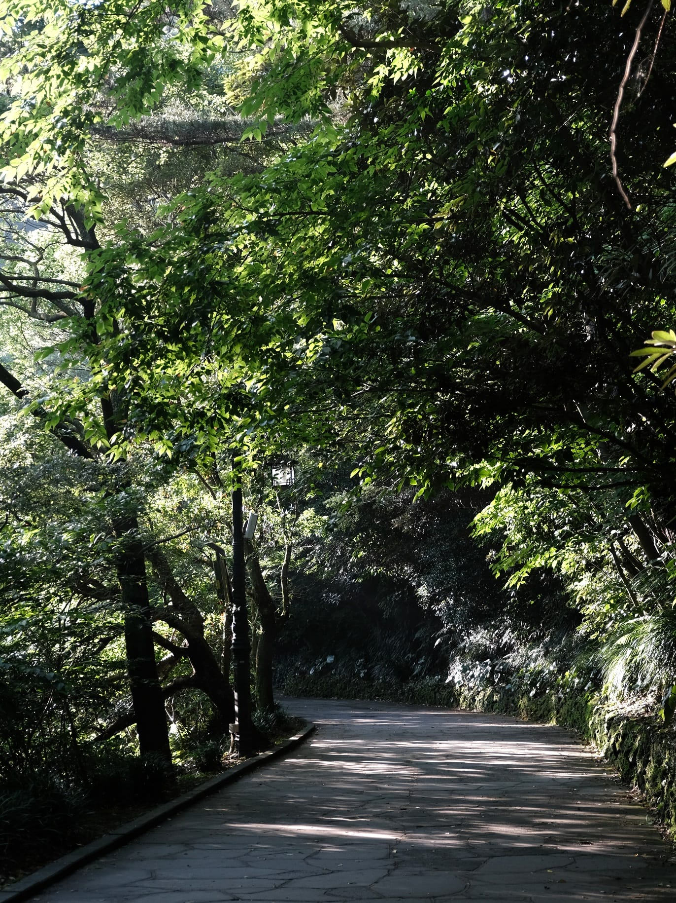
暖溫帶森林與溪谷步道
入口處至瀑布約步行 10 分鐘
沿著清澈溪流鋪設的步道非常平緩，兩旁栽種松膽木、山茶花等珍稀植物，滿滿負離子與芬多精，適合全家大小散步。
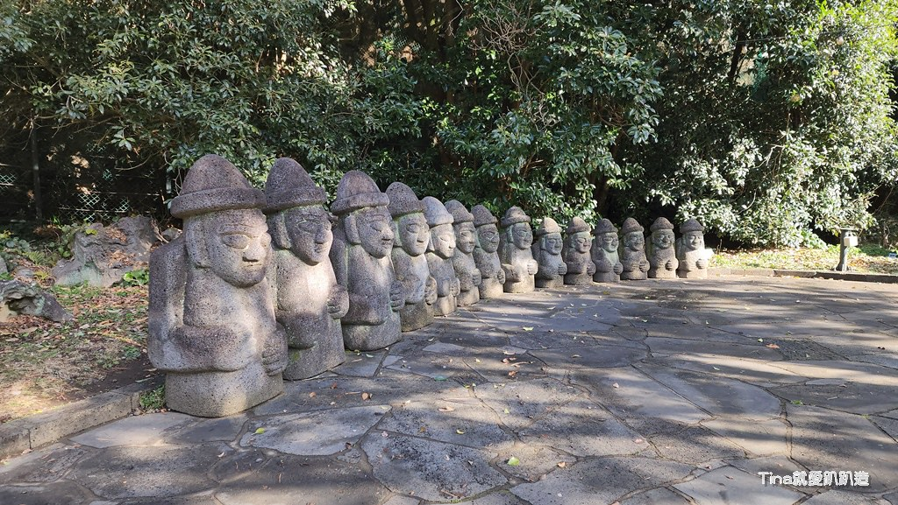
石頭爺爺與傳統造景
入口公園區設有巨大的濟州石頭爺爺（Dol Hareubang）與傳統武士雕像，是拍照打卡的熱門地標。
💡
遊覽提醒：園區整體往返與拍照約需 45 ~ 60 分鐘；步道全程無階梯且極為平坦，推嬰兒車或輪椅皆非常方便。若想避開人潮，建議選擇晚餐後的夜間時段前來體驗浪漫氣氛。
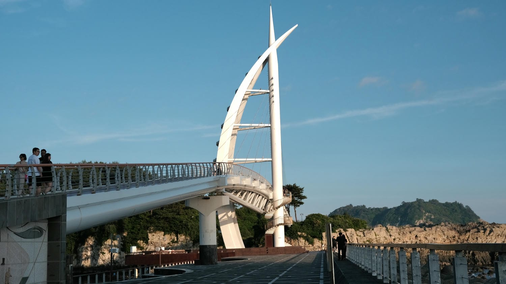
位於濟州島南部的西歸浦港，是連接西歸浦港與無人島「鳥島」的斜張行人跨海大橋。橋樑造型靈感取自濟州傳統筏船「Tewu」（테우）的帆船形象，意涵為「締造新緣分的橋樑」。白天能遠眺湛藍海景與漢拏山，夜晚則會點亮璀璨的彩色燈光，是西歸浦最具代表性的夜景散步地標。
🌊
必訪亮點與特色體驗：
帆船主塔與璀璨夜燈
橋身中央的斜張主塔如同揚帆出海的船隻，入夜後搭配 LED 彩色燈光投射，散步 bridge 上感受浪漫的海風與夜色。
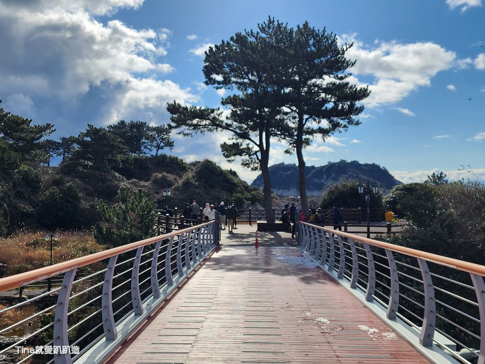
鳥島生態木棧步道
跨過新緣橋即可抵達
穿過大橋即可踏上無人島「鳥島」，島上設有約 1.2 公里的環島木棧道與暖溫帶林，沿途可欣賞火山奇岩與海天一色。
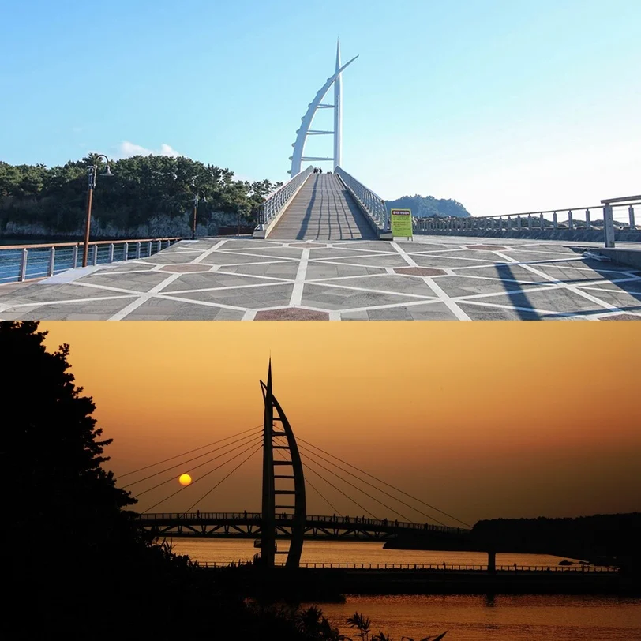
絕美日落與西歸浦港全景
傍晚時分是最佳造訪時刻，站在橋上能飽覽西歸浦港船隻停泊與夕陽餘暉染紅海面的壯麗景致。
💡
遊覽提醒：建議安排於黃昏日落前半小時抵達，可一次收集夕陽與點燈後的夜景；走完全橋加上鳥島木棧道環島約需 45 ~ 60 分鐘。海岸邊夜間風大，建議攜帶薄外套保暖。